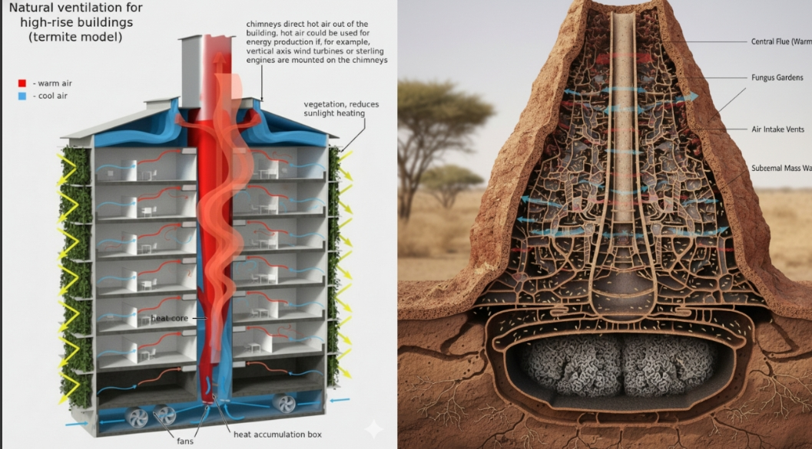
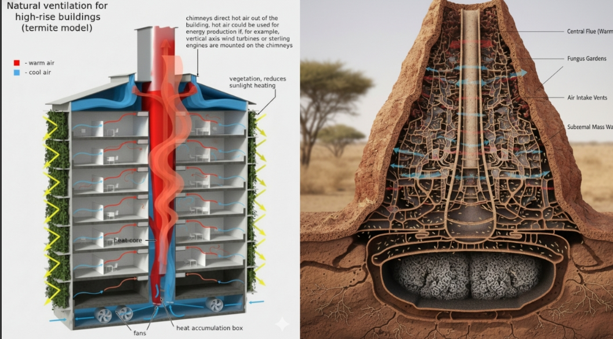
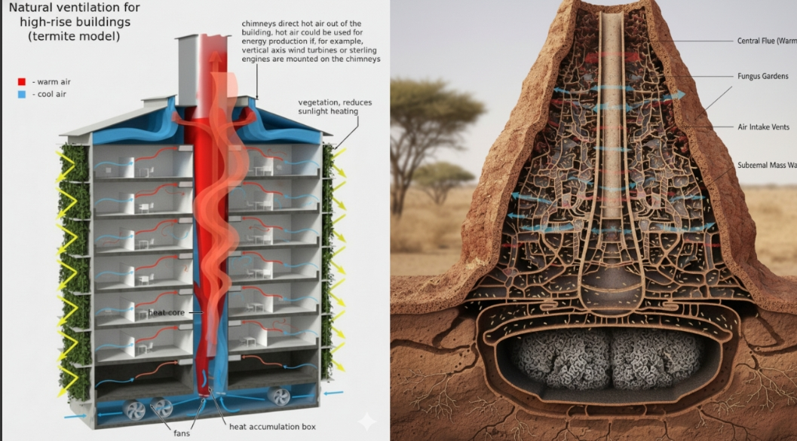

3. Termite Mound Cooling Systems

3. Termite Mound Cooling Systems
The overarching source for the climate science is the Intergovernmental Panel on Climate Change (IPCC), the United Nations body for assessing the science related to climate change, which synthesizes thousands of peer-reviewed studies.
Other major sources include NASA, NOAA, and The Lancet.
· What will happen: Heatwaves will become more frequent, longer-lasting, and more intense.
Regions like the Middle East, South Asia, and the Mediterranean will experience temperatures that push the limits of human survivability for parts of the year.
Increased atmospheric energy and a shifting jet stream will create "blocking patterns" that trap high-pressure systems.
This isn't just about discomfort; it leads to mass mortality events, reduced labor productivity, and catastrophic wildfires.
· Proof/Source: The IPCC AR6 Report (2021) states with high confidence that "hot extremes (including heatwaves) have become more frequent and more intense across most land regions since the 1950s," and this is directly attributed to human influence.
The Lancet Countdown on health and climate change annually tracks the rise in heat-related mortality.
· What will happen: Multi-meter sea level rise over centuries becomes locked in.
This is not just from thermal expansion of warming water, but from the irreversible collapse of major ice sheets in Greenland and West Antarctica.
Greenland's ice sheet contains ~7 meters of potential sea level rise; Antarctica contains ~58 meters. Once certain "tipping points" are crossed (like the disintegration of ice shelves that hold back glaciers), the melt becomes self-sustaining and unstoppable for millennia.
·
Proof/Source: IPCC AR6 and NASA's IceSat-2 mission show accelerating ice mass loss.
The IPCC notes that under very high emissions scenarios, global mean sea level rise could reach 0.63–1.01 meters by 2100, and several meters by 2300.
· What will happen: The oceans absorb about 30% of emitted CO₂, which reacts with seawater to form carbonic acid.
This lowers the ocean's pH, a process called acidification.
A more acidic ocean dissolves calcium carbonate, the building material for shells and skeletons of corals, mollusks, and plankton like pteropods.
This disrupts the entire marine food web, from plankton to fish, and kills coral reefs, which support 25% of all marine life.
· Proof/Source: NOAA's PMEL Carbon Program and the IPCC have documented a 30% increase in ocean acidity since the Industrial Revolution.
The UN Ocean Conference reports explicitly link acidification to threats on marine biodiversity and food security for billions.
· What will happen: Arctic permafrost, frozen for millennia, will thaw rapidly.
This releases vast stores of methane (CH₄, a potent greenhouse gas) and CO₂, which further accelerates warming—a positive feedback loop.
The thawing also destabilizes infrastructure (roads, buildings, pipelines) and releases ancient viruses and bacteria.
The methane release is particularly concerning as it can cause abrupt, non-linear warming spikes.
· Proof/Source: The NASA Arctic Boreal Vulnerability Experiment (ABoVE) and numerous studies in journals like Nature Geoscience document accelerating permafrost thaw and greenhouse gas release.
The IPCC identifies this as a key risk for amplifying climate change.
· What will happen: We are entering the planet's sixth mass extinction event.
The combined stress of rapid climate change, habitat loss (from deforestation and pollution), and direct exploitation will wipe out countless species.
Species cannot adapt or migrate quickly enough to keep pace with the changing climate. Coral reefs may be >90% lost at 1.5°C warming.
Ecosystems like the Amazon rainforest could shift from carbon sinks to carbon sources.
· Proof/Source: The IPBES (Intergovernmental Science-Policy Platform on Biodiversity and Ecosystem Services) Global Assessment Report (2019) concludes that around 1 million species are already at risk of extinction, with climate change as a major driver.
· What will happen: A warmer atmosphere holds more moisture (~7% more per 1°C), supercharging the water cycle.
This leads to "whiplash" events: more intense, prolonged droughts followed by catastrophic, flooding rainfall.
Regions like the American Southwest, the Mediterranean, and parts of Africa will face persistent "megadroughts."
Simultaneously, rainfall events will break records, causing devastating urban and riverine floods.
· Proof/Source: NASA's GRACE satellite missions track extreme water storage changes.
The IPCC AR6 states with high confidence that human-induced climate change has already increased the frequency and intensity of heavy precipitation and agricultural/ecological droughts.
· What will happen: The combination of heat extremes, droughts, floods, and unpredictable growing seasons will severely disrupt global agriculture.
Staple crops like wheat, rice, and maize will see yield declines in major "breadbasket" regions.
Ocean acidification and warming also disrupt fisheries. This leads to price spikes, food shortages, and geopolitical instability, hitting the most vulnerable populations hardest.
· Proof/Source: The IPCC Special Report on Climate Change and Land (2019) details the risks to food security.
The FAO (UN Food and Agriculture Organization) consistently reports on climate change as a threat multiplier for hunger and malnutrition.
· What will happen: The geographic range of disease vectors like mosquitoes (carrying malaria, dengue, Zika) and ticks will expand into previously temperate regions.
Habitat destruction also increases human-wildlife contact, raising the risk of zoonotic spillover events (like COVID-19).
Warmer temperatures allow pathogens and vectors to survive at higher latitudes and altitudes.
Stagnant water from floods creates breeding grounds.
· Proof/Source: The Lancet Countdown and the WHO explicitly name climate change as a critical factor in the changing burden of disease.
Studies in Nature and Science link habitat loss and climate change to increased pandemic risk.
· What will happen: Hundreds of millions of people will be displaced from areas rendered uninhabitable by sea-level rise, extreme heat, desertification, or chronic water scarcity.
This will create immense humanitarian crises and strain political systems.
Low-lying island nations and densely populated delta regions (e.g., Bangladesh, Nile Delta) will be the first affected.
"Climate refugees" are not currently protected under international law, creating a legal gray zone.
· Proof/Source: The World Bank's "Groundswell" reports project that up to 216 million people could be displaced within their own countries by 2050 due to climate impacts.
The IPCC and the UNHCR acknowledge climate change as a growing driver of displacement.
· What will happen: The cumulative effects will place an immense, unsustainable drag on the global economy.
Costs will come from direct damage (disasters), lost productivity, infrastructure failure, and soaring insurance premiums.
Asset stranding (e.g., fossil fuel reserves, coastal property), supply chain collapses, and climate-driven conflict will create systemic risks to the global financial system, potentially worse than the 2008 crisis.
· Proof/Source: Reports by the Network for Greening the Financial System (NGFS) and major economic analyses like the Stern Review and Moody's Analytics show that unchecked warming could wipe out trillions from global GDP by century's end.
The U.S. National Climate Assessment details escalating costs to the American economy
Nature's Inspiration: Carbonic Anhydrase (CA), an enzyme found in living things (like in your red blood cells) that rapidly converts carbon dioxide into bicarbonate for transport and buffering.
Industrial CO2capture systems that use CA or a synthetic analogue to dramatically accelerate the rate of CO2absorption from industrial flue gases. This makes the carbon capture process far more efficient and less energy-intensive than traditional methods, preventing large volumes of greenhouse gases from entering the atmosphere.
The Humpback Whale's flippers, which have large, bumpy, irregular knobs called tubercles on their leading edges.
Wind turbine blades designed with tubercles. This biomimetic design reduces drag and increases lift, allowing the turbines to operate more efficiently and quietly, especially at lower wind speeds.
This boosts the clean energy output from wind farms, reducing the reliance on carbon-emitting power plants.

3. Termite Mound Cooling Systems African Termite Mounds, which maintain a constant, comfortable temperature despite the harsh exterior climate using a complex system of vents and air currents for passive ventilation.
Architecture and building designs, such as the Eastgate Centre in Zimbabwe, that use a similar passive heating and cooling system. By regulating air flow and utilizing the thermal mass of the building, these structures can save up to 90% of the energy typically consumed by conventional air conditioning ( systems, significantly lowering the building's carbon footprint.
The ability of many living organisms, like your skin or tree bark, to sense damage and self-repair.
Self-healing concrete that contains dormant Bacillus bacteria and nutrients. When cracks form and water seeps in, the bacteria "wake up" and begin producing calcite, which seals the crack. This extends the life of infrastructure, reducing the frequent and energy-intensive production of new cement, a major source of global CO2emissions.
The process used by coral reefs and seashells to form their hard calcium carbonate structures by naturally sequestering CO2 from the water.
Companies are developing cement replacements that mix industrial CO2emissions into the material, effectively locking the carbon away while forming a strong, durable building block.
The cement is called Carbon Negative Cement so as it cures it sucks carbon out the atmosphere as traditional cement caused roughly 8 to 10% of the to carbon emissions.
 6. Kingfisher-Inspired Bullet Trains
6. Kingfisher-Inspired Bullet TrainsThe beak of the Kingfisher bird, which allows it to dive from air into water with minimal splash signifying a highly efficient aerodynamic shape. The redesigned nose cone of the Shinkansen E5 Series "Bullet Train" in Japan. The streamlined shape solved a major problem—a sonic boom created when the old train exited tunnels—and simultaneously reduced air resistance by 30%, leading to a 13% reduction in energy consumption (and thus carbon emissions) while traveling faster.
Photosynthesis in plants, where sunlight is used to convert water and carbon dioxide into chemical energy (starch) and oxygen. Advanced catalysts and solar cells designed to mimic this process, using sunlight to convert CO2 and water into energy-rich solar fuels like hydrogen or carbon-based liquids. This creates a clean, renewable fuel source that directly uses and recycles atmospheric CO2.
The network of thread-like structures, or mycelium, that make up the underground part of a fungus.
Mycelium-based materials grown on agricultural waste.
This material can be used as a sustainable, carbon-negative alternative to plastic packaging (like Styrofoam) and synthetic foam insulation in buildings. Since it is grown using a natural process, it requires minimal energy to produce compared to petrochemical products, and it is fully compostable.
The Lotus Leaf, which possesses a micro- and nano-structured surface that causes water to bead up and roll off, carrying dirt and pathogens with it (hydrophobicity).
Self-cleaning coatings for solar panels and building exteriors. By reducing the need for water, harsh cleaning chemicals, and manual maintenance, these coatings ensure solar panels maintain maximum efficiency (thus generating more clean energy) and reduce the material and energy costs associated with building upkeep.
The highly efficient carbon-fixing ability of moss, algae, and microalgae—microscopic plants—which are responsible for a huge portion of the planet's photosynthesis.
Large-scale bioreactors or "biomass filters" (sometimes called "biostacks") installed in urban environments.
These systems circulate air through living moss or algae cultures, which are highly effective at scrubbing CO2 and other pollutants out of the atmosphere, essentially acting as biological air purifiers that mimic a dense forest.
Grows extremely fast and captures large amounts of CO₂ from the atmosphere. Can be used for furniture, flooring, paper, and textiles. Improves soil retention and prevents erosion. Bamboo forests provide habitats for wildlife and act as natural carbon sinks.Bamboo forests are a home for 100s of Pandas and they also feed on it.Its deep roots store carbon in the soil, which helps reduce global warming.
Rapid growth and deep roots sequester carbon effectively. Used in clothing, ropes, biodegradable plastics, insulation, and biofuel. Hemp improves soil health, requires low water, and reduces dependency on synthetic materials.
High carbon capture, can grow on marginal lands. Used for biomass fuel, paper, and packaging. Enhances soil fertility and reduces erosion risk.
Fast-growing, absorbs CO₂ efficiently. Products include paper, fiberboard, biodegradable packaging, and textiles. Kenaf reduces deforestation and enriches soil.
 5. Seagrass:
5. Seagrass:
Stores carbon underwater for centuries. Supports sustainable fisheries and protects coastal ecosystems. Improves water quality and provides habitat for marine life.
Absorbs CO₂ and sinks to deep oceans. Used for biofuels, fertilizers, food additives, and packaging. Supports marine biodiversity and is a renewable resource.
Fast-growing tree with high carbon sequestration. Used for timber, furniture, paper, and bioenergy. Provides shade, improves soil, and controls erosion.
Rapid growth, efficient CO₂ uptake. Used in timber, paper, and bioenergy. Reduces pressure on natural forests and helps in carbon storage.
Fast-growing tree storing carbon effectively.
Used for furniture, paper, and bioenergy.
Supports soil stabilization and provides shade.
Absorb CO₂ in urban areas.
Used for timber and furniture.
Supports biodiversity and cools urban heat islands.
Urban CO₂ absorption.
Used for furniture, syrup, and landscaping.
Purifies air, offers shade, and enhances green spaces.
Absorb CO₂ in urban settings.
Used for timber, paper, and resin.
Stabilizes soil and provides habitats for wildlife.
Cover crop, increases soil carbon.
Used for animal feed and green manure.
Fixes nitrogen naturally, reducing fertilizer need.
Stores carbon in soil as a cover crop.
Used for animal feed and compost.
Reduces greenhouse gas emissions from fertilizers.
Prevents soil erosion and stores carbon.
Used for animal feed and green manure.
Improves soil structure and retains nutrients.
Grows on marginal land and absorbs CO₂.
Used for biodiesel production.
Reduces fossil fuel dependency and erosion.
Coastal carbon sinks.
Used for timber, charcoal, and eco-tourism.
Protects coastlines, supports biodiversity, and stores carbon in soil.
Photosynthesis-intensive, absorbs CO₂.
Used for bioethanol, sugar, and paper.
Provides renewable energy and protects soil.Low-Carbon Fuel: Sugarcane ethanol, particularly the type produced in countries like Brazil, has a significantly lower greenhouse gas (GHG) emission profile than gasoline. The plant absorbs a large amount of Carbon dioxide from the atmosphere as it grows through photosynthesis. When the resulting ethanol is burned, the carbon dioxide released can be largely offset by the carbon absorbed during the growing phase, making it a nearly carbon-neutral or even carbon-negative fuel source.
Reduced Air Pollution: Ethanol is often blended with gasoline to boost its octane rating and reduce harmful tailpipe emissions like carbon monoxide and unburned hydrocarbons.
Sustainable Alternatives to Plastic and Wood
The fibrous residue left after crushing the cane, called bagasse, is a major byproduct that is now being repurposed into sustainable materials.
High carbon sequestration grass.
Used for biomass fuel and paper.
Grows on marginal lands, improves soil, and prevents erosion.
Fast-growing tree, absorbs CO₂.
Used for bioenergy, basketry, and timber.
Helps soil stabilization and erosion control.
Fast-growing, absorbs CO₂.
Used for bioethanol, animal feed, and paper.
Drought-tolerant and improves soil health.
Stores carbon in bark and wood.
Used for cork products and furniture.
Supports biodiversity and prevents deforestation.
 23. Agave:
23. Agave: Carbon storage and drought-tolerant.
Used for biofuel, textiles, and tequila.
Reduces water use and stabilizes soil.
Fast-growing tropical tree.
Used for timber and furniture.
Provides high-value wood and long-term carbon storage.
Biodegradable Packaging: Bagasse is used to create compostable and biodegradable alternatives to plastic and Styrofoam food packaging, plates, and containers.
Unlike plastic, these products can break down into nutrient-rich soil within weeks or months in composting facilities, drastically reducing plastic pollution in landfills and oceans.
Nitrogen-fixing tree that absorbs CO₂.
Used for timber, gum, and fodder.
Improves soil fertility and survives drought conditions.
Carbon-storing shrub.
Used for nutritional oils, cosmetics, and medicine.
Prevents erosion and stabilizes soil.
Absorbs CO₂ efficiently.
Used for biofuel, cooking oil, and animal feed.
Provides renewable energy and covers soil.
Shade-grown, absorb carbon.
Used for coffee production.
Supports biodiversity and reduces deforestation.
Absorb CO₂ in agroforestry systems.
Used for chocolate and cosmetics.
Provides biodiversity-friendly shade and enriches soil.
 30. Pineapple:
30. Pineapple:Absorbs CO₂ during growth. Used for food, fibers, and biofuel. Grows on degraded lands and stabilizes soil.
Monitor forests, track endangered species, plant trees in deforested areas.Drones are also used in:
Drones help monitor ice caps, greenhouse gas emissions, and ocean temperatures.
They collect data without needing fuel-heavy aircraft, reducing emissions while supporting climate science.
Drones help farmers by scanning crops, monitoring soil health, and spraying fertilizers/pesticides efficiently.
This reduces chemical overuse, increases yield, and reduces carbon footprint compared to traditional machinery.
Example: Precision agriculture drones have saved crops from pests and helped farmers feed more people.
Drones monitor deforestation, poaching, and wildlife populations.
They provide high-resolution images of forests and oceans, helping governments prevent illegal deforestation or fishing.
Example: In Africa, drones have caught poachers in action, protecting endangered elephants and rhinos.
The Superpower for a Sustainable Planet
The intricate challenges facing our planet—from climate change and pollution to biodiversity loss—are often too complex and data-heavy for human analysis alone.
By processing massive datasets (satellite imagery, sensor readings, weather models) with unparalleled speed and accuracy, AI doesn't just manage data; it provides intelligent and actionable information. It acts as a highly efficient, predictive nerve center, transforming our ability to monitor, understand, and rapidly respond to environmental crises, effectively turning the tide toward a sustainable future.
AI's utility extends across critical sectors, allowing us to enhance efficiencies, predict disasters, and accelerate scientific discovery.
AI is crucial for optimizing the transition to a clean energy system.
Smart Grids and Renewables: AI algorithms predict energy supply (from variable sources like wind and solar) and demand, optimizing power distribution. This increases the integration and reliability of renewables, making the entire electric grid more efficient.
Example: Google's DeepMind used a reinforcement learning model to optimize the cooling systems in its data centers, achieving a 40% reduction in cooling energy consumption and a 15% improvement in total Power Usage Effectiveness (PUE).
AI helps industries and smart cities reduce their carbon footprint by identifying inefficiencies in buildings, transportation networks, and manufacturing processes.
Example: Google Maps uses AI to suggest eco-friendly routes with less traffic and more consistent speeds, which is estimated to have prevented over 1 million tonnes of CO2 annually during its rollout phase.
AI provides eyes and intelligence on the ground (and from space) for conservation efforts.
AI analyzes data from thousands of air quality monitoring stations and satellite sensors to provide real-time air and water pollution maps and forecasts, empowering public health responses and regulatory enforcement.
Example: The International Methane Emissions Observatory (IMEO) leverages AI to detect and quantify methane emissions—a potent greenhouse gas—from oil and gas installations globally, helping to pinpoint and mitigate sources quickly.
Computer vision and acoustic monitoring systems identify, track, and count species, and detect threats like illegal logging and poaching.
Example: The WWF's Wildlife Crime Technology Project uses AI-integrated thermal cameras in reserves like Kenya's Solio Game Reserve to automatically detect and classify humans and vehicles, sending real-time alerts to rangers to prevent poaching intrusions.
AI optimizes the use of limited natural resources, particularly in food production.
AI analyzes soil health, weather, and crop imagery to guide farmers on the precise amount of water, fertilizer, and pesticides needed.
Example: Companies use AI-powered robotics and satellite analysis to implement precision farming, reducing water and chemical usage while increasing crop yields by only treating the specific areas that require intervention.